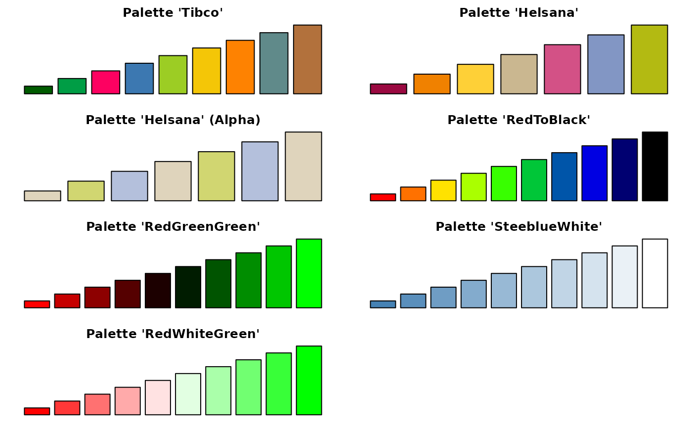

Pal.RdSome more custom palettes.
Pal(pal, n = 100, alpha = 1)
# S3 method for palette
plot(x, cex = 3, ...)
hred
horange
hyellow
hecru
hblue
hgreenname or number of the palette. One of
RedToBlack (1), RedBlackGreen (2), SteeblueWhite (3), RedWhiteGreen (4), RedWhiteBlue0 (5), RedWhiteBlue1 (6), RedWhiteBlue2 (7), RedWhiteBlue3 (8), Helsana (9), Tibco (10), RedGreen1 (11), Spring (12), Soap (13), Maiden (14), Dark (15), Accent (16), Pastel (17), Fragile (18), Big (19), Long (20), Night (21), Dawn (22), Noon (23), Light (24)
integer, number of colors for the palette.
the alpha value to be added. This can be any value from 0 (fully transparent) to 1 (opaque). NA is interpreted so as to delete a potential alpha channel. Default is 0.5.
a palette to be plotted.
extension for the color squares. Defaults to 3.
further arguments passed to the function.
hred, horange, hyellow, hecru, hblue and hgreen are constants, pointing to the according color from the palette Pal("Helsana").
a vector of colors
Canvas(c(0,1))
ColorLegend(x=0, y=1, width=0.1, col=Pal(1, n=50))
ColorLegend(x=0.15, y=1, width=0.1, col=Pal(2, n=50))
ColorLegend(x=0.3, y=1, width=0.1, col=Pal(3, n=50))
ColorLegend(x=0.45, y=1, width=0.1, col=Pal(4, n=50))
ColorLegend(x=0.6, y=1, width=0.1, col=Pal(5, n=50))
ColorLegend(x=0.75, y=1, width=0.1, col=Pal(6, n=50))
ColorLegend(x=0.9, y=1, width=0.1, col=Pal(7))
ColorLegend(x=1.05, y=1, width=0.1, col=Pal(8))
text(1:8, y=1.05, x=seq(0,1.05,.15)+.05)
title(main="DescTools palettes")
par(mfrow=c(4,2), mar=c(1,1,2,1))
barplot(1:9, col=Pal("Tibco"), axes=FALSE, main="Palette 'Tibco'" )
barplot(1:7, col=Pal("Helsana"), axes=FALSE, main="Palette 'Helsana'" )
barplot(1:7, col=SetAlpha(Pal("Helsana")[c("ecru","hellgruen","hellblau")], 0.6),
axes=FALSE, main="Palette 'Helsana' (Alpha)" )
barplot(1:10, col=Pal("RedToBlack", 10), axes=FALSE, main="Palette 'RedToBlack'" )
barplot(1:10, col=Pal("RedBlackGreen", 10), axes=FALSE, main="Palette 'RedGreenGreen'" )
barplot(1:10, col=Pal("SteeblueWhite", 10), axes=FALSE, main="Palette 'SteeblueWhite'" )
barplot(1:10, col=Pal("RedWhiteGreen", 10), axes=FALSE, main="Palette 'RedWhiteGreen'" )
